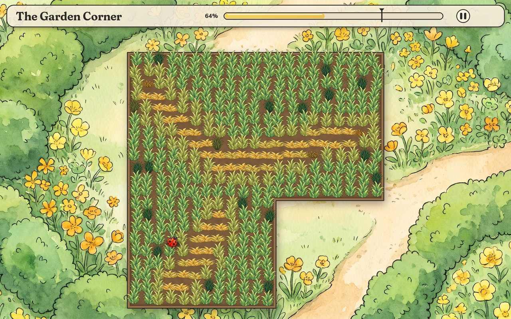
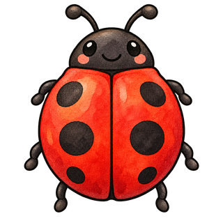
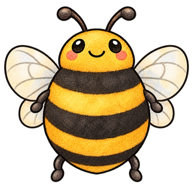
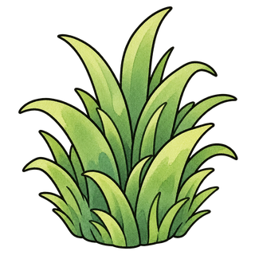
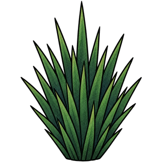
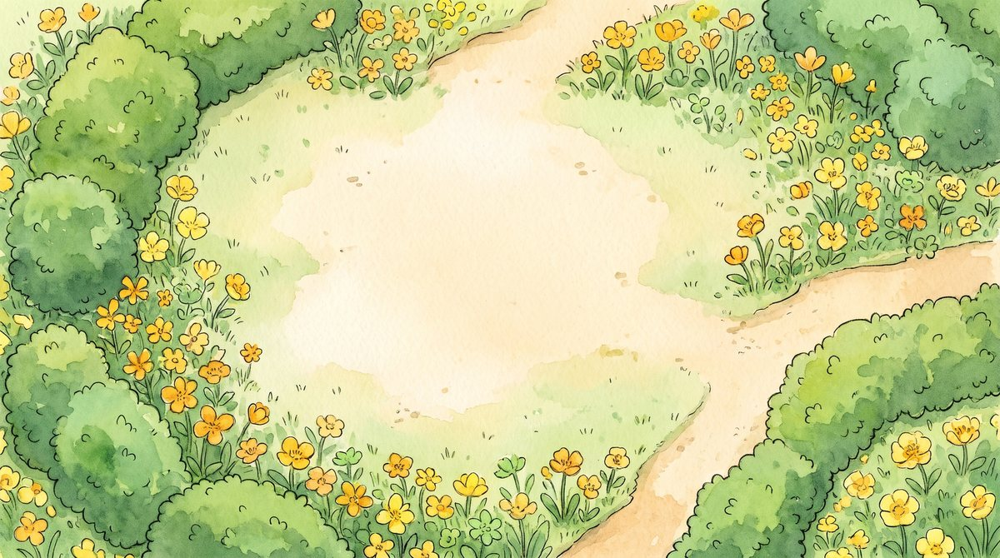
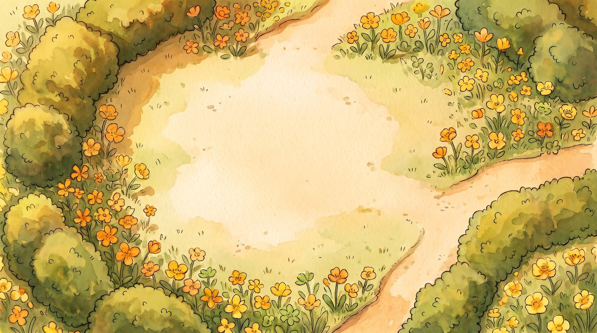
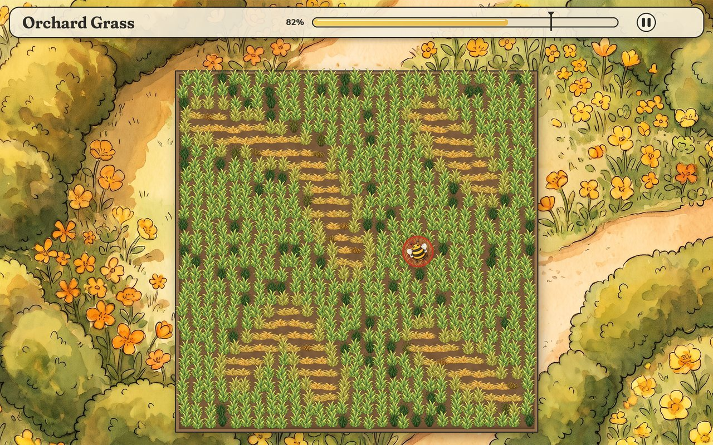

Touch Grass
Run your hand through the meadow.
Sweep a finger or mouse through a sunlit field and the grass bends, flattens and turns gold under your touch, then slowly grows back. Every stroke through standing grass gives energy. Fill the meter to its line and the meadow blooms and opens the next field. On the way you meet the bugs who live there: grumpy bees, wasps and ants that warn you before they nip, and friendly ladybugs, butterflies, caterpillars and snails you can pet and collect in your Bug Garden. There's no timer you can fail and no game over.
This is the reviewed design for finishing Rich Conlan's own project, Touch Grass. The core of the game (sweeping, regrowth, energy, 15 shaped fields, five grass types, three moves, seven bugs, the collection, scores, sharing) is theirs. This design keeps all of it and reworks the numbers, the look, the pacing and the screens. Each change to one of their rules is marked changed. Comments are welcome on anything here, before the art and the build begin.

The feeling
The calm, tactile pleasure of running your hand through long grass. Unhurried, warm, never punishing, quietly satisfying. A few minutes of it should leave you calmer than you started. The name is the joke, and the game is the gentle answer to it.
Who and where. Anyone wanting a few calm minutes: on a phone in a spare moment (one thumb, either orientation), or on a computer with a mouse or trackpad. A field takes from about 15 seconds (the first) to about 2 minutes (the last). The whole meadow is about 15 to 25 minutes, with replays for scores, badges and bugs.
How it plays
The stroke
Press and drag. Standing grass under your finger bends away from the motion, lies flat, flashes gold and puffs gold motes that drift into the energy meter, with a soft rustle pitched by how tall the grass was. Behind you, the grass slowly grows back and pops up again when it's worth sweeping. The stroke is the heart of the game: it must feel lush and immediate, with no lag and no skipped grass on fast swipes.
A field
Sweep the whole field once, then go round again, sweeping whatever has stood back up. The first field takes about one and a half rounds, the last about three and a half. Steer around grumpy bugs, pet the friendly ones, and use a move when it does a job sweeping can't. Fill the meter to its line and the field blooms.
The grass rules, in plain words
- Standing grass pays; short grass just bends. A tall tuft gives more energy than a shorter one. Grass that's still low after a sweep only sways under your finger: it gives nothing, but it isn't set back either, so sweeping quickly never hurts. changed The original plan's grass grew back in a second and a half, so scrubbing one spot won and the gold trail vanished at once.
- Gold shows where you've been. Swept grass turns gold and fades back toward green as it grows, but keeps a touch of gold. Untouched grass stays deep green, so you can always see what's left.
- Faster strokes give a little more, up to +20% for a quick swipe. changed The plan allowed +50%, which rewarded haste in a calm game.
- Five grass types. Default; tall (slow to grow back, worth more); short (stands up fast, worth less); flowered (a little more, petals fly); and stiff, which the first stroke only loosens and a fresh stroke flattens. Loosened stiff grass has its own look, so you can see what still needs a second stroke.
Winning, and the head start
- Win a field by filling the energy meter to its line. changed The plan also let flattening every blade win. With grass growing back slowly, you touch every blade long before the meter fills, so that would have made the meter pointless.
- Touch every blade and a leaf badge beside the meter turns gold. Near the end it shows how many are left, and the last untouched tufts shimmer so they're easy to find on a phone.
- Do both and the next field starts 15% full: a head start. changed This is the plan's carry-over, sized so it can't snowball.
- You can't lose. A bite takes a little energy, never below zero, and the field carries on.
Three moves, each with a job
The plan's three moves stay. A move never adds to the meter overall: it sweeps the grass it covers and costs about what that grass is worth, so it's for doing what your hand can't. It's paid only when it fires. changed At the plan's flat prices every move earned more than it cost, and Full Clear won any field in one tap.
| Move | Arrives | What it does |
|---|---|---|
| Ring | Field 6, with the first ant | Sweeps a circle and calms every grumpy bug in it, so you can clear grass beside a bug without being nipped. |
| Line | Field 9, with stiff grass | Sweeps a wide corridor along your drag and flattens stiff grass in one go. Reaches far edges in one stroke. |
| Full Clear | Field 11 | Touches every blade at once: a gust rolls across the meadow, completing the whole-field badge on a big field. |
The bugs
All seven of the plan's bugs, with its wander and spawn rules. They're sized in screen pixels, so they're never specks on a phone. changed On the largest fields a grid cell is only 10 px on a phone.
- Grumpy bugs (ant, bee, wasp) puff up, glow red and buzz when a sweeping finger comes close. The red ring is drawn big enough to show around your thumb. You always get at least a second and a half of warning. Move away and they calm down; stay and they nip, then scurry off.
- Friendly bugs (ladybug, butterfly, caterpillar, snail) can be tapped to pet them: they hop, hearts float up, and they join your Bug Garden. Sweeps never hurt them; a stroke just nudges them aside. Petting gives a little energy once per bug per field. changed Tapping one bug over and over used to give unlimited energy.

Ladybug, the first friend and the style anchor
Bee, a grumpy one
Default grass tuft
Stiff grass tuftFifteen fields, one summer day
The plan's 15 field sizes and shapes are kept, and grouped into three times of day, each with its own painted surroundings and music. changed This gives the run a visible journey and an ending. Each new thing gets one short hint card the first time it appears.
| # | Field | Time | Shape | What's new |
|---|---|---|---|---|
| 1 | The Back Lawn | Morning | 12×12 square | Sweeping and the meter. A ghost hand shows a stroke until you make your first. |
| 2 | Dew Patch | Morning | 13×13 square | Regrowth: it opens with a stripe already mown and growing back. |
| 3 | Clover Corner | Morning | 15×15 square | Short grass, and the first ladybug to pet. The whole-field badge. |
| 4 | Long Meadow | Morning | 17×19 rectangle | Tall grass. |
| 5 | Buttercup Field | Morning | 19×19 square | Flowered grass. The light warms. |
| 6 | The Garden Corner | Afternoon | 21×21 L-shape | First odd shape, the first ant, and the Ring. |
| 7 | Picnic Lawn | Afternoon | 23×23 square | A calm breather, and the first snail. |
| 8 | Butterfly Bend | Afternoon | 25×25 L-shape | The butterfly. |
| 9 | Crossroads | Afternoon | 27×27 cross | Stiff grass, and the Line. |
| 10 | Orchard Grass | Afternoon | 29×29 square | The bee. Every grass type together. |
| 11 | Hedge Garden | Golden hour | 31×31 L-shape | A hedge of tall grass, a grumpy corner, and Full Clear. |
| 12 | Five-Stone Lawn | Golden hour | 33×33 pentagon | The wasp: quick and wide-roaming. |
| 13 | The Big Green | Golden hour | 34×34 square | A half-mown lawn: a moving patchwork of stripes. |
| 14 | Two Islands | Golden hour | 35×35 two islands | A gap between two fields; the caterpillar. |
| 15 | Sunset Meadow | Golden hour | 36×36 octagon | The finale: every bug and grass type. Winning plays the ending. |
The difficulty comes from size, grass mix and bugs, never a clock. Every number was checked with a pacing simulator at phone and desktop sizes, for calm, average, fast and scribbling players. Fast and scribbling players are never slower than average ones, and calm players always win too.
Screens
- Title: a painted morning meadow with real grass along the bottom that bends as your pointer passes. Play goes straight to your next field.
- Meadow map new: the 15 fields as patches along a winding path, morning to sunset. Replay any finished field for a better score.
- Playing: a slim strip with the field name, the energy meter and its little opening flower, the leaf badge, pause and sound. The moves sit where your thumb rests.
- Field complete: the field blooms with flowers and petals, then a card shows your score, your best and any head start.
- Bug Garden changed: the plan's Insect Farm becomes a little painted garden under a bell jar where the friends you've met wander about. Tap one for its card and friendship hearts.
- The ending new: after field 15 the light fades to dusk, fireflies rise, and every friend you've met comes out onto the field. "You touched all the grass. Go touch some real grass."
- Settings: music and sound volume, haptics, reduced motion, an optional "sweep by hovering" for trackpads, your name for challenges, credits, and clear data with an in-game confirm.
- Sharing and challenges (kept): a 1200×630 scorecard, and challenge links that say "Sam scored 1,240 on Sunset Meadow. Beat them?". A friend who hasn't reached that field yet plays it once as a guest.
The look
Soft storybook watercolour in a warm meadow palette of fresh green, buttercup yellow and honey gold, with gentle hand-inked outlines. changed This replaces the plan's flat procedural look and system-font screens. The grass is real painted tufts that the game bends, flattens and tints gold in code. The bugs are top-down sprites with bold outlines so they read on green and on gold. The painted surroundings frame each field, and the field has a clear edge, so it's always obvious where the grass you can touch begins and ends.



The sound
- Music: four gentle instrumental tracks, all in one key: a warm acoustic theme for the title and map, then airy morning, fuller afternoon and wistful golden-hour pieces.
- The meadow: a soft loop of breeze and distant birds under the music, and crickets at dusk for the ending.
- Every action has a sound: a rustle that follows your finger, a twang for stiff grass, a buzz and a soft "bonk" for grumpy bugs, a chirp for each friend, and a whoomp, swish and gust for the moves. The milestone bells and the bloom arpeggio are played by the game itself, always in tune with the music.
Size of the job
Hardest parts: grass that looks lush and runs smoothly with over a thousand tufts on a phone; making the stroke feel right before anything else is built; bugs that read clearly at every size; tuning all 15 fields with a solver that plays every one of them; and a layout that works in both phone orientations.
Done means: every field can be finished and the game can be won; it starts cleanly on desktop and on phones in both orientations; the game can always carry on, even when played wrongly; every control works by mouse, keyboard and touch; music, sound and saving work; it installs as an app and plays offline; and the project's own tests pass.